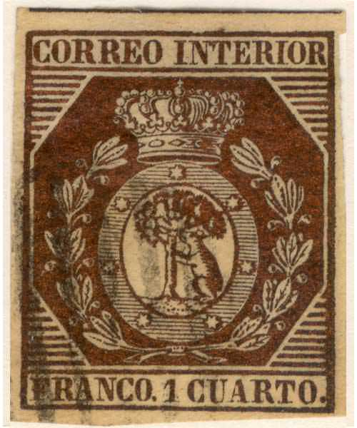
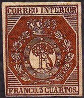
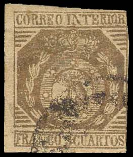
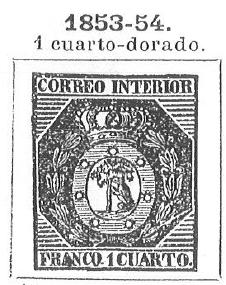
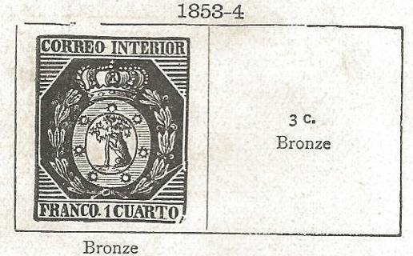
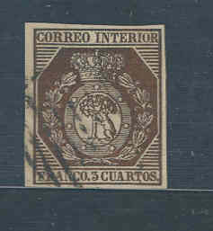

Return To Catalogue - Spain overview
Note: on my website many of the
pictures can not be seen! They are of course present in the
catalogue;
contact me if you want to purchase it.



Certified genuine
1 c bronze 3 c bronze
Value of the stamps |
|||
vc = very common c = common * = not so common ** = uncommon |
*** = very uncommon R = rare RR = very rare RRR = extremely rare |
||
| Value | Unused | Used | Remarks |
| 1 c | RR | RR | |
| 3 c | RRR | RRR | |
Reprints exist of these stamps, they are of much less value than the original stamps. It seems that the paper of the reprints is whiter than the originals (the original stamps have a yellowish paper tint). Furthermore, in the reprint of the 3 c the bottom part of the 'S' of 'CUARTOS' is missing and the tail of the 'R' of this word is broken. Deceptive forgeries exist!
Essays exist with a 2 c stamp (by the way, the following stamps could be forgeries):

(Essay?)

(Essays?, note left 'CUARTO' and right 'CUARTOS')
Bogus issue or non-issued stamp? Inscription 'CORREO INTERIOR 5 CUARTOS', colour red:
and a primitive forgery (note the clumsy crown):
Another forgery of the 1 cu value with a very different crown.

Some badly executed forgeries with the lettering very irregular
of the 1 cu, 2 cu and 3 cu values. I've been told that these
might have been made by Placido Ramon de Torres, but I don't know
if this is true.
A slightly more deceptive forgery (note the broad top of the 'R' in 'CORREO INTERIOR'):

Another stamp that I do not trust, the number of lines in the lower corners is different from the above genuine stamps:



A Senf forgery with 'FALSCH' overprint
Sperati forgery?:



Two forgeries, made by the same forger. Note the shape of the
tree.

Two forgeries taken from a Fournier Album of forgeries.
And some more highly 'suspected' stamps and other forgeries:
A modern forgery made by Peter Winter, with 'Replik' written on the backside:


Peter Winter forgery with 'Replik' (enlarged at the right)


Two other Winter forgeries of the 1 c and 3 c values


Sperati forgery of the 1 c value. Sperati made two reproductions.
I presume that this is 'Reproduction A' in which the top left
part of the right hand side of the 'U' of 'CUARTO' is broken.


Sperati forgeries of the 3 c value.
Sperati proofs
Stamps - Briefmarken - Timbres-Poste - Postzegels - Francobolli - Estampillas


{kind=link}
{kind=link}
{kind=link}
{kind=link}